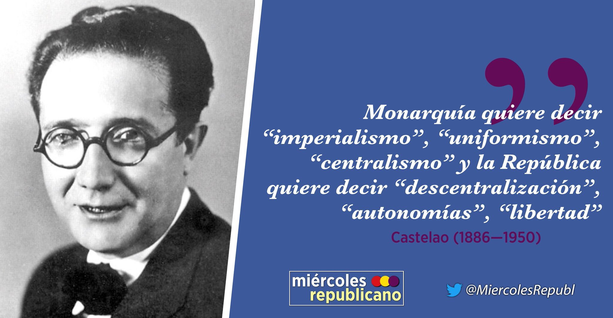

Ficha técnica
- Datos de la obra
- Título: Sempre en Galiza
- Autor: Alfonso R. Castelao
- País de publicación: Argentina
- Editorial: As Burgas
- Data de publicación: 1944
Sobre la obra
Sempre en Galiza es un libro que combina el ensayismo político con el memorialismo autobiográfico y que no se concibió como una obra unitaria, sino que reúne textos escritos entre 1935 y 1944. El ensayo está estructurado en un prólogo llamado Adro. Después de este prólogo, Castelao coloca tres partes o libros: Libro primeiro, Libro segundo y Libro terceiro.
Adro
Adro, ofrece los textos que Castelao escribió durante su destierro en Badajoz, en 1935. Los había publicado en A Nosa Terra bajo el título de "Verbas de chumbo" ('Palabras de plomo') en 1935. En este prólogo señala las diferencias entre Galicia y Extremadura-Castilla-Andalucía. Estas diferencias, por ejemplo minifundio y latifuncio, hacen imposible que un Estado centralista pueda resolver con leyes iguales para todos problemas diferentes. Así, la solución para los problemas de Extremadura-Castilla-Andalucía, latifundista, será el socialismo colectivista, mientras que para el minifundio gallego, la solución no puede ser otra que el coopperativismo societario.
Defiende asimismo la unión del partido galleguista con los partidos del Frente Popular, puesto que solo estos están dispuestos a conceder a Galicia un Estatuto de Autonomía, cosa que resulta imposible dentro del marco de los partidos de la derecha, lo cual no supone ni alianza con el marxismo o el anarquismo ni abandono del catolicismo, como señalan algunos miembors del partido galleguista, entre ellos el propio Vicente Risco.
Imágen de Miércoles Republicano
Libro primeiro
Reúne textos que Castelao redactó en 1937 y 1938 y que publicó entre y en la revista republicana de inspiración comunista Nueva Galicia, editada en Madrid. Llevaban el mismo título de la serie anterior, Verbas de chumbo. El objetivo de estos textos era conseguir la unión de todos los gallegos antifascistas en la lucha a favor de la República, ya que ésta acabaría por aprobar en sus prlamento y por promulgar el Estatuto de Autonomía, plebiscitado en . La sublevación militar había paralizado la promulgación del Estatuto, como es sabido.
Castelao defiende en estos textos la importancia que tiene el Estatuto de Autonomía para Galicia y las ventajas que para ésta traerá una república federal. Castelao defiende una Hespaña, con H, nación de naciones, federal y abierta hacia una federación ibérica, que integraría a Portugal. Al recomponer estos textos para ser el Libro primeiro de Sempre en Galiza hará los reajustes necesarios puesto que ya la guerra se ha perdido y, por otra parte, ya no son sólo sus destinatarios los republicanos de la Península, sino también los gallegos que viven en América, tanto exiliados como emigrantes, en quienes pone ahora Castelao su gran esperanza, pues sabe que en la España de los cuarenta su obra no va a poder circular.
Libro segundo
El Libro segundo lo escribe Castelao en Nueva York, en los primeros meses de 1940, y lo termina durante el viaje que realiza de Nueva York a Buenos Aires, para establecerse definitivamente en esta ciudad, en julio de 1940. Sus destinatarios son ya claramente los emigrantes y los exiliados en América.
La primeros dieciséis capítulos del libro son realmente un memorial de agravios contra la República por parte del Castelao galleguista, pues le reprocha a ésta que nunca aprobó el Estatuto de Autonomía gallego ni creyó la mayor parte del republicanismo español en el Estado federal, siendo muchas veces tan centralista como los propios monárquicos. Según Castelao, una república federal hubiera consolidado el régimen republicano y evitado la guerra civil.
Los siete capítulos siguientes que cierran el libro tienen un carácter misceláneo y se refieren a temas como la emigración, la condición del gallego como lengua propia de Galicia, los agravios recibidos a lo largo de la historia por la comunidad gallega dentro del marco del centralismo o incluso no faltan reflexiones sobre la situación política internacional, en plena II Guerra Mundial.
Libro terceiro
El Libro terceiro fue redactado entre enero-febrero de 1942 y . Es el más ideológico de los tres y en él Castelao se convierte en portavoz del galleguismo, en los tiempos difíciles del exilio y de la censura. Quiere que permanezca el ideario galleguista para el futuro, superados estos tiempos difíciles. Grandes temas de este libro son la caracterización de Galicia como nación al tener una lengua, una cultura, una entidad geográfica y una actividad económica propias y características, su defensa de una España plurinacional y federal y hasta la utopía de una Unión Ibérica, en la que también figuraría Portugal.